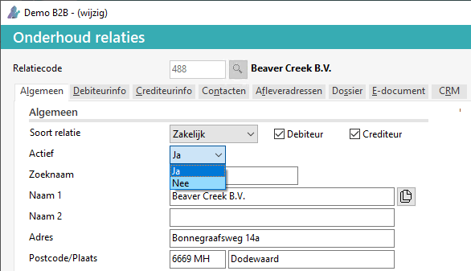
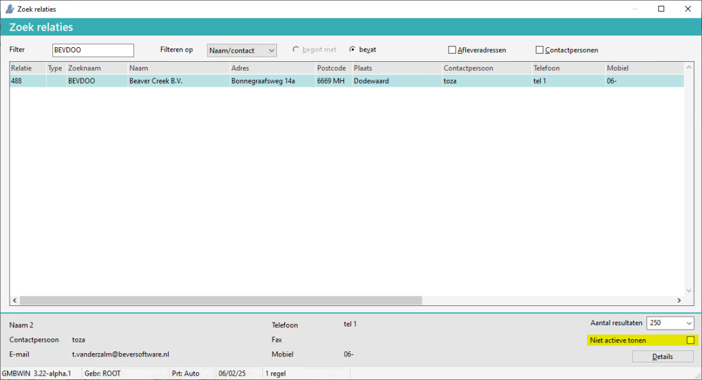
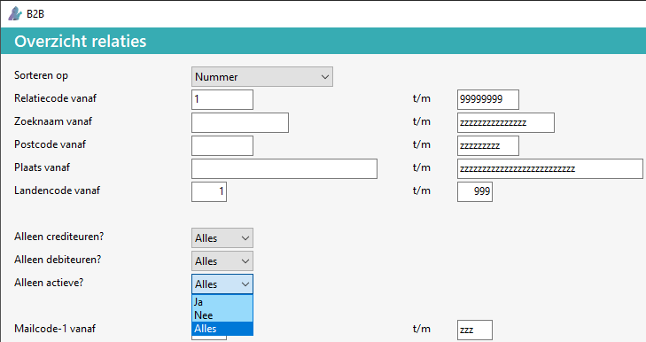

Het is mogelijk om bij een relatie aan te geven of deze relatie actief is of niet meer actief.
Het volgende geldt voor een niet actieve relatie:
Een melding verschijnt er bij invoer van een order.
Zowel aan verkoop als aan inkoopkant geïmplementeerd.
Verschijnt niet in het zoekvenster Zoek relaties,
behalve als het vinkje niet actieve tonen aangezet wordt.
Kan in de relatie overzichten uitgesloten (standaard) of juist geprint worden.
zie ook FAQ.
Bij Onderhoud relaties (BRR) en Opvragen relaties F6 is het veld Actief toegevoegd:
| Actief | Optie of relatie actief is of niet: - Ja (standaard) - Nee |

Er kan geen nieuwe order ingevoerd worden voor een niet actieve relatie.
Bij Zoek relaties is het vinkje Niet actieve tonen beschikbaar:

Als deze aangevinkt wordt, worden ook de inactieve relaties getoond.
Bij de volgende Relatie rapportages kunnen relaties uit- of ingesloten worden:
Overzicht relaties (BRP)
Etiketten relaties (BRE)
Mailmerges relaties (BRM)
Het veld Alleen Actieve is toegevoegd:
| Alleen actieve | Optie om in- / actieve relaties weer te geven: - Alle (standaard) - Actieve - Inactieve |

Dit status hiervan is als volgt de Powerall Connect apps:
Nee, voor de Powerall CRM app.
Ja, bij de Powerall Werkbon App (als referentie data is bijgewerkt, is de relatie niet meer zichtbaar bijv. bij een nieuwe servicemelding.
In de volgende programma's wordt dit toegepast:
Invoeren/wijzig bonnen
Invoeren kassabonnen
Verwerken bestelvoorstel
Besteladvieslijst
Invoeren/wijzigen offertes
Invoeren/wijzigen verkooporder
Back-to-back naar inkooporder
Invoeren/wijzigen inkooporders
Aanmaken werkorder
Urenregistratie touchscreen
Project planningsadvies
Contractenbeheer
Invoeren/wijzigen huurorders
Invoer servicemelding (Machinist App)
Invoer servicemelding (Werkbon App)
Beheer servicemelding
Gerelateerde onderwerpen
Copyright ©